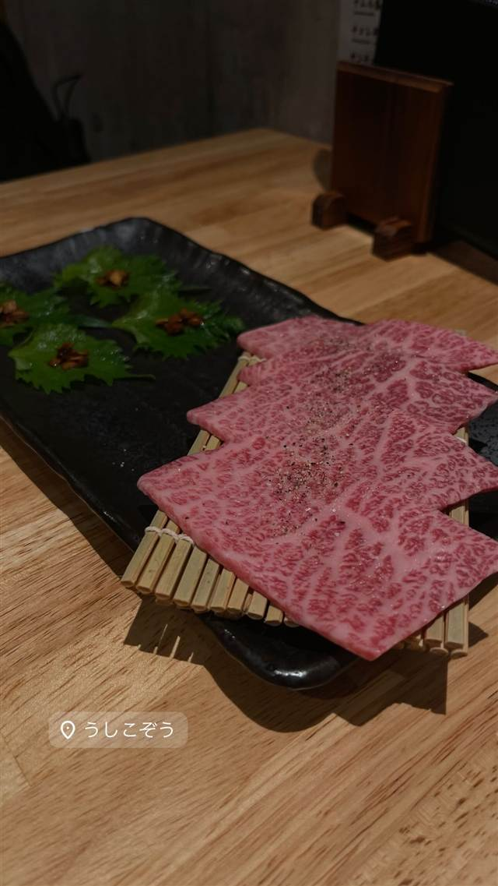

うしこぞう
17歳から精肉現場を経験した代表が選ぶ、厳選雌牛の和牛
うしこぞう
鶴見が本店の「肉小僧グループ」4号店として2019年12月にオープンした川崎の焼肉店。代表は17歳で精肉店に入り屠畜・枝肉処理などの現場を経験した肉のプロで、厳選した雌牛の和牛をリーズナブルな価格で提供している。
TRIVIA
豆知識
- 店名は代表が10代から精肉の現場で修業してきた「肉小僧グループ」の一員であることに由来する
- 厳選した雌牛の和牛にこだわっている
REVIEWS
世間の評判
3.52食べログ
山ロース丼とオシャレな空間
- 山ロース丼やがんばロース丼などの名物メニューを楽しむ声が多い
- 煙たくなく清潔感のあるオシャレな空間を評価する声が非常に多い
- スタッフの丁寧な接客をホスピタリティが高いと評価する声がある
- 人気店のため平日でも予約必須で飛び込みでは入れないという声がある
食べログ 口コミ608件
| 創業 | 2019年12月開業 |
|---|---|
| 系譜 | 鶴見に本店を構える「肉小僧グループ」の4号店 |
| 看板 | 牛肉の刺身・焼肉、A5ランク黒毛和牛 |
| こだわり | 肉屋出身ならではの目利きで、厳選した雌牛の和牛を使用 |
| どこから | 23区の外れ・近郊 |
| 行くなら | 予約必須 |
| 予算 | 昼 ¥1,000～¥1,999 夜 ¥4,000～¥4,999 |
| 場所 | 川崎駅 神奈川県川崎市川崎区小川町5-10 チネピット1F |
| メモ | クラブチッタ通り沿い、個室あり、A5和牛をリーズナブルな価格で提供 |
食べたもの：牛肉の刺身・焼肉
NEARBY
近い店・同じ系統の店
-
 ★
豚骨 京急川崎駅
自家製麺 麺屋 利八
1日熟成させた自家製太麺と吊るし焼きチャーシューの鶏白湯
昼 ¥1,000～¥1,999 夜 ¥1,000～¥1,999
★
豚骨 京急川崎駅
自家製麺 麺屋 利八
1日熟成させた自家製太麺と吊るし焼きチャーシューの鶏白湯
昼 ¥1,000～¥1,999 夜 ¥1,000～¥1,999
-
 ★
醤油・中華そば 川崎駅・京急川崎駅
すず鬼直伝 スタミナらーめん かわさ鬼
三鷹の人気店が手がけた初プロデュース店の極太麺ラーメン
夜 ¥1,000～¥1,999
★
醤油・中華そば 川崎駅・京急川崎駅
すず鬼直伝 スタミナらーめん かわさ鬼
三鷹の人気店が手がけた初プロデュース店の極太麺ラーメン
夜 ¥1,000～¥1,999
-
 ★
つけ麺 八丁畷駅
三三七（さんさんなな）
鶏と煮干を効かせた濃厚つけ麺「煮干搾り」
昼 ～¥999 夜 ～¥999
★
つけ麺 八丁畷駅
三三七（さんさんなな）
鶏と煮干を効かせた濃厚つけ麺「煮干搾り」
昼 ～¥999 夜 ～¥999
-
 ★
焼肉 白金高輪駅
炭焼 金竜山
ロンドン帰りの店主夫妻が焼く上タン塩とシャトーブリアン
夜 ¥20,000～¥29,999
★
焼肉 白金高輪駅
炭焼 金竜山
ロンドン帰りの店主夫妻が焼く上タン塩とシャトーブリアン
夜 ¥20,000～¥29,999
-
 ★
焼肉 関内駅
関内苑 本店
韓国職人仕込みのキムチとA5和牛の手打ち冷麺
昼 ¥1,000～¥1,999
★
焼肉 関内駅
関内苑 本店
韓国職人仕込みのキムチとA5和牛の手打ち冷麺
昼 ¥1,000～¥1,999
-
 ★
焼肉 鶯谷駅
焼肉 鶯谷園
1968年創業、半世紀以上続く良心価格の厚切りタン
夜 ¥6,000～¥7,999
★
焼肉 鶯谷駅
焼肉 鶯谷園
1968年創業、半世紀以上続く良心価格の厚切りタン
夜 ¥6,000～¥7,999